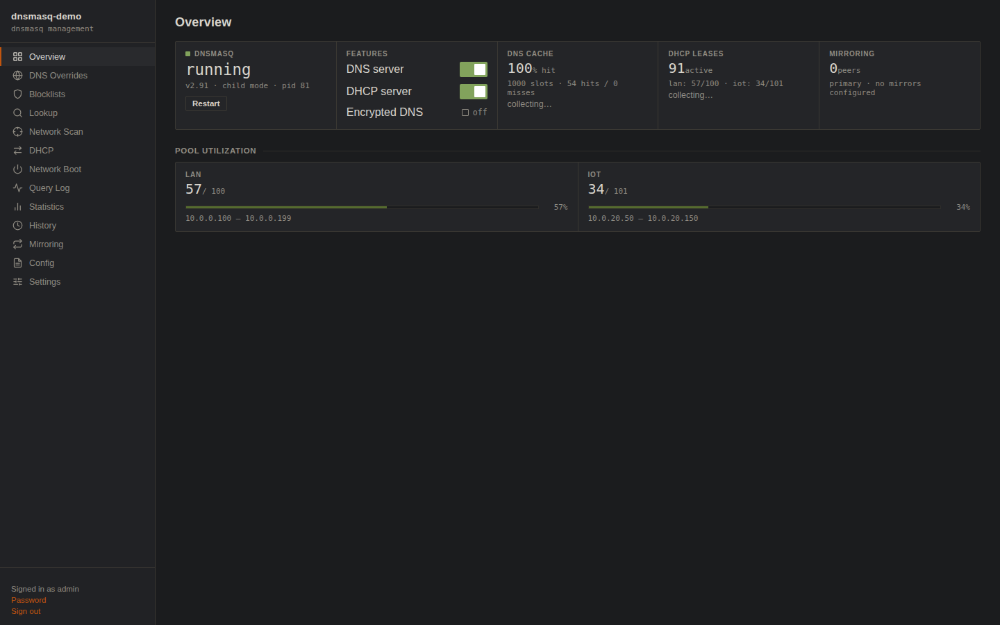
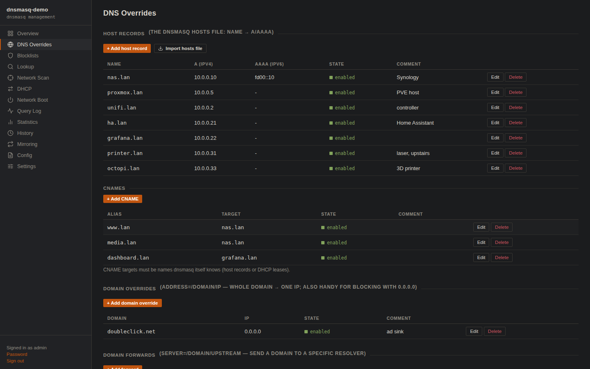
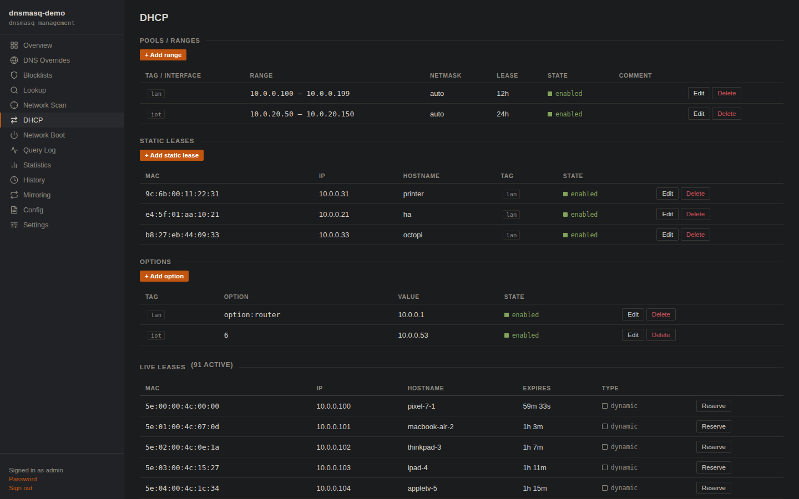
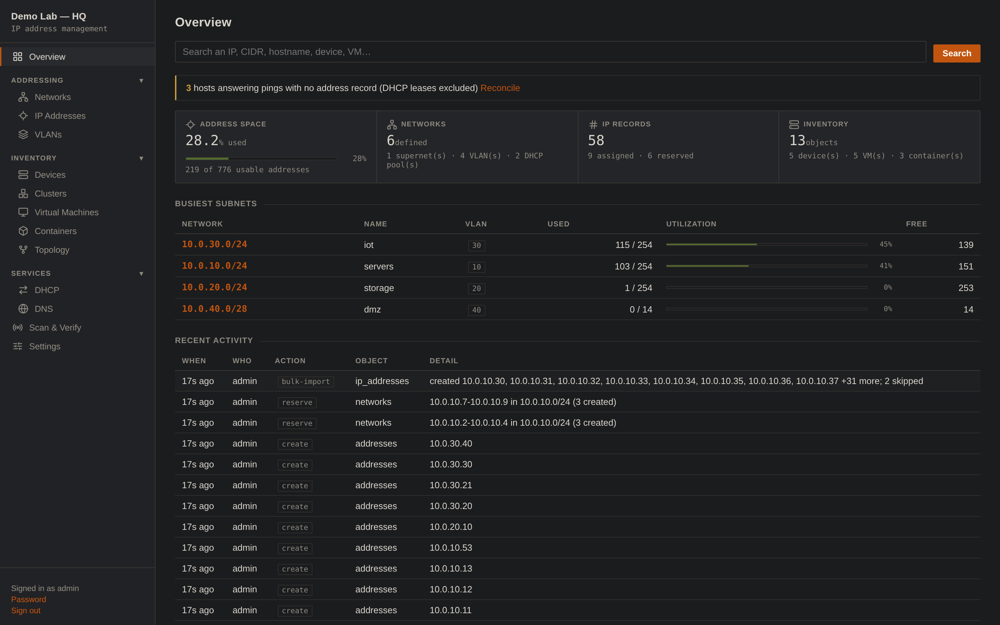
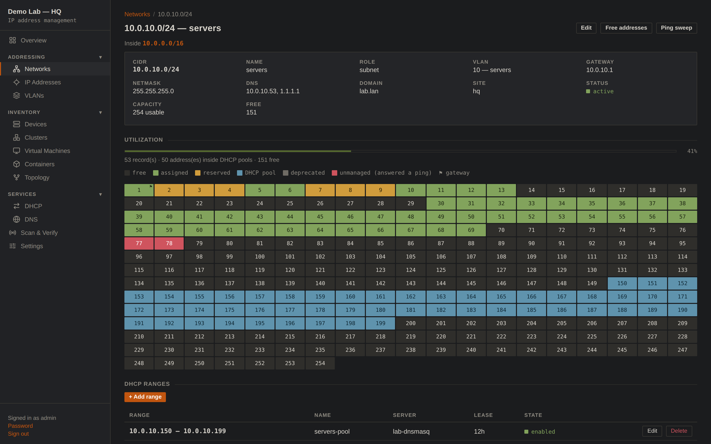
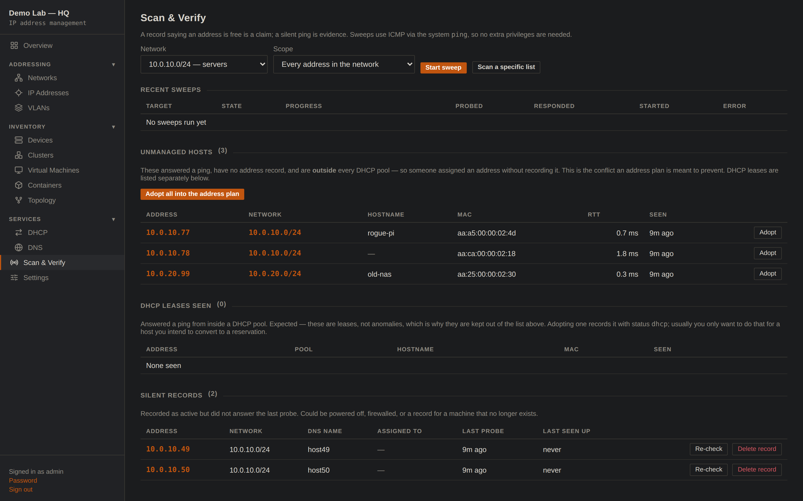
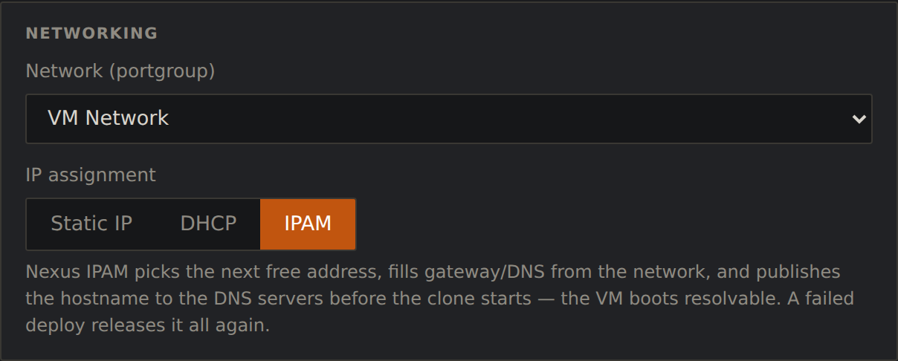
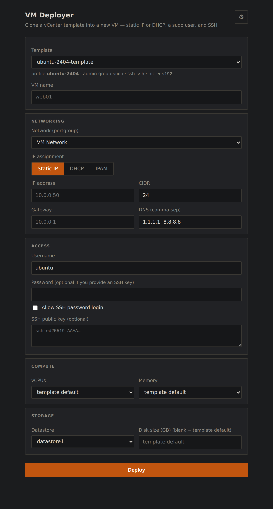

How two small self-hosted tools — Nexus IPAM and DNSMAQ-MGR — grow into most of what an Infoblox-class DDI suite does for a small office or homelab, and how a VM deployer on top turns the address plan into one-click provisioning.
Every network answers three questions constantly: what is this machine called (DNS), what address does it get (DHCP), and who is supposed to be using which address (IPAM). The enterprise world bundles those into a product category — DDI — and sells appliances for it: Infoblox, BlueCat, EfficientIP. They are excellent, and they are priced and sized for organizations with network teams.
Below that line, the same three questions usually get answered with a hosts file on one box, the DHCP tab of a consumer router, and a spreadsheet that was accurate in March. The failure mode is always the same: the three sources drift apart, and one day two machines claim the same address, or a hostname points at a machine that was decommissioned last year. The information existed — it just lived in three places with no referee.
The stack described here takes the enterprise idea — one system of record driving DNS and DHCP — and rebuilds it at homelab scale from two small, self-hosted web apps that also work perfectly well alone.
DNSMAQ-MGR is a
management plane for dnsmasq, the same lightweight resolver/DHCP server
that already runs inside most routers. The app owns the configuration: everything lives
in its JSON stores and renders into a dedicated conf-dir — the distro's own
dnsmasq.conf is never touched. Every change is validated with
dnsmasq --test against a temporary render before the live file is swapped
atomically, and applied minimally: host records, static leases and options reload with a
SIGHUP (zero downtime), only structural changes restart the daemon (~100 ms).
A bad edit is rejected with dnsmasq's own error message before it can touch the running
service.



On top of the basics it carries the features that usually justify a bigger product:
blocklist subscriptions for ad/malware sinking, an opt-in encrypted DNS
upstream (a supervised dnscrypt-proxy speaking DoH/DNSCrypt,
fail-closed by default so a dead proxy stops resolution rather than silently leaking
plaintext queries to the ISP), PXE/UEFI network-boot options, a query log, statistics
and history — and, crucially for this story, config mirroring: a primary
node pushes selected config sections to standby nodes, so ns1 and ns2 answer
identically without hand-syncing anything.
Nexus IPAM is the address plan. Networks nest under supernets, carry VLANs, gateways, DNS servers and domains; every address record can hold multiple names (deliberate parallel A records are a first-class shape, not an anomaly), a MAC, and a link to the thing that uses it — a device, a VM, or a container, organized into clusters with rack positions.


What separates an IPAM from a spreadsheet is that a spreadsheet can't check itself.
Here the Scan & Verify page treats the plan as a set of claims and a
silent ping as evidence, using the system ping binary so it needs no special
privileges. A sweep sorts the world into: hosts answering with no record
(someone assigned an address without recording it — the exact conflict an address plan
exists to prevent), DHCP leases (expected, reported separately, never mistaken for
anomalies), and records that never answer (machines that quietly stopped existing).
One click adopts a rogue into the plan with its discovered hostname and MAC.

Each tool is genuinely standalone. Wired together they follow one rule, borrowed straight from how the big DDI suites keep their sanity:
Concretely: IPAM pushes the hosts section to both DNS nodes through
DNSMAQ-MGR's existing mirror-receive endpoint — the same machinery the nodes
already use to mirror each other. The pushed section locks read-only in the node UIs
(edit names in IPAM, where the record of truth lives), and a
Detach button on either node instantly restores local control. The
integration required zero changes to DNSMAQ-MGR; to the DNS node, the IPAM is just
another mirror source.
Names published this way land as A and PTR on every node, and the reverse flow works too: a one-shot importer reads an existing dnsmasq estate into the plan losslessly — aliases and all — because the project rule is round-trip fidelity before authority: IPAM may not become the writer for a data class until import → push-back reproduces the current state exactly.
| Capability | Enterprise DDI (Infoblox-class) | This stack |
|---|---|---|
| Address plan: supernets, VLANs, utilization | yes | yes |
| Authoritative LAN DNS, A/AAAA/CNAME/PTR | yes | yes |
| DHCP scopes, reservations, options, PXE | yes | yes |
| IPAM → DNS enforcement (single writer) | yes | yes — mirror push, A + PTR |
| Redundant DNS via replication | grid | primary → standby mirroring |
| Network discovery & reconciliation | yes | ping sweeps, adopt / silent records |
| Device / VM / container inventory | yes | with vCenter & controller importers |
| API-first automation, tokens, roles, audit | yes | yes — every UI action is an API call |
| Encrypted upstream DNS (DoH/DNSCrypt) | varies | fail-closed by default |
| Multi-site anycast, DNS firewall feeds, support contracts | yes | no — and not the point |
| Footprint | appliances / VMs + licensing | two containers, SQLite + JSON |
A DDI stack proves itself when other tools stop asking humans for addresses. The add-on here is VC-Deployer, a small web UI (and CLI) that clones vCenter templates into new VMs with cloud-init. Alongside Static IP and DHCP, it grows a third IP-assignment mode: IPAM.

Behind that button is one IPAM call — POST /api/provision — which does,
atomically and in order:
The VM boots already resolvable, with a forward and reverse record that agree, an inventory entry that says where it runs, and an address that can never collide with a lease — because the allocator and the DHCP plan are the same database. Deprovisioning is the exact inverse. No spreadsheet was consulted at any point.

None of this required a rack appliance or a license file. It required deciding which system owns which facts, refusing to let any tool write outside its lane, and making the plan verify itself against the wire. That operating discipline — not the hardware — is what the enterprise products actually sell. At small scale you can have it for the cost of two containers and an afternoon.